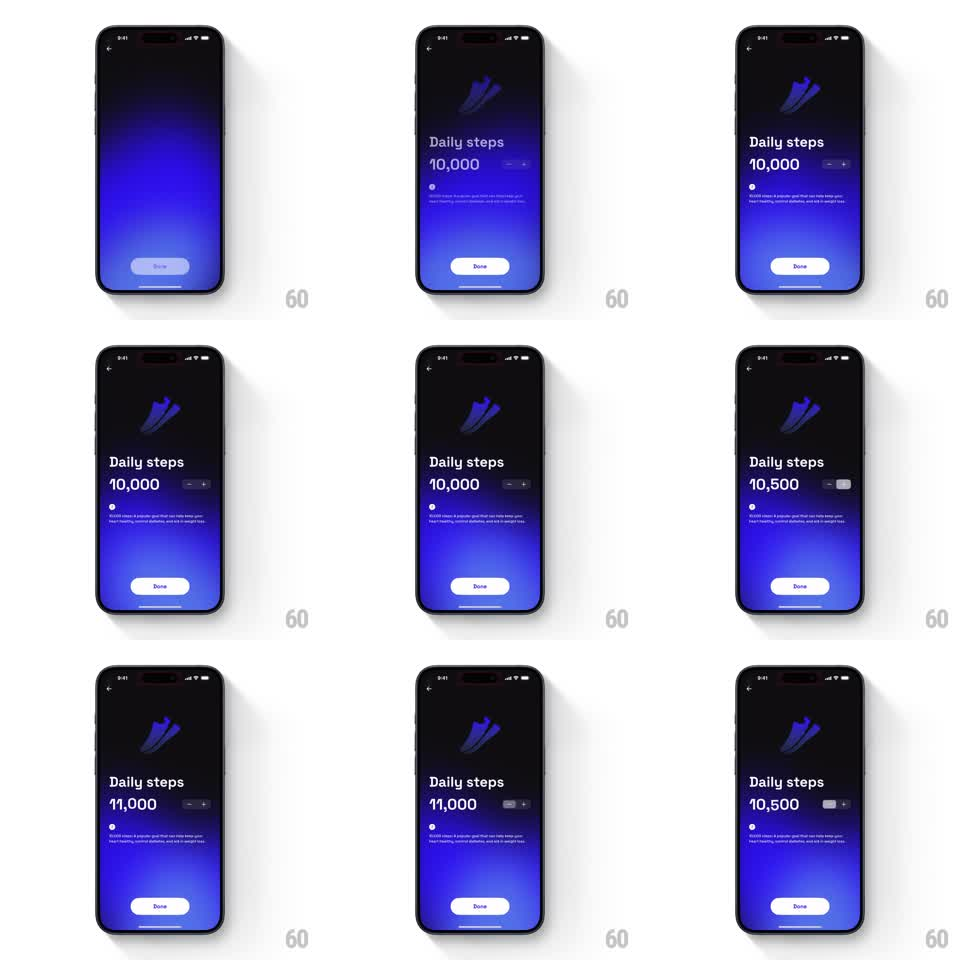

Media
Frame-by-frame

Rebuild this animation 1:1: GO Club's daily goal stepper - tapping +/- on the "Daily steps" screen rolls the big goal number by 500 with a smooth odometer ticker while the rest of the screen holds still.

Rebuild this animation 1:1: GO Club's daily goal stepper - tapping +/- on the "Daily steps" screen rolls the big goal number by 500 with a smooth odometer ticker while the rest of the screen holds still.
## Integration
Integration: stack-agnostic spec - springs given as stiffness/damping, timed motions as duration + curve; map every value to your framework and animation library of choice.
## Scene
Dark gradient screen (blue glow at bottom): back arrow, shoe illustration, "Daily steps" label, the huge goal number ("10,000") with a minus/plus stepper control to its right, small explainer copy, white "Done" button at bottom.
## Motion spec
Pattern: odometer number ticker, ~300ms per step.
- Plus/minus tap: button depresses (scale 0.92, 80ms) and the number rolls - each digit column travels vertically (up for increment, down for decrement) with light motion blur during travel, 300ms ease-out, thousands separator stable.
- Rapid taps queue into one continuous roll to the final value (no restart per tap).
- Haptic tick per committed step of 500.
- Everything else static.
## Calibration
- Digits roll per column; the whole string sliding as one block reads as a marquee.
- Roll duration is fixed (300ms) regardless of queued steps - longer queues just roll further.
## Reduced motion
Number changes instantly with a 100ms fade on the changed digits.
## Don't miss
- Direction communicates sign: increment rolls up, decrement rolls down. One direction for both feels wrong.
- The Done button never moves and is never blocked by the rolling digits.